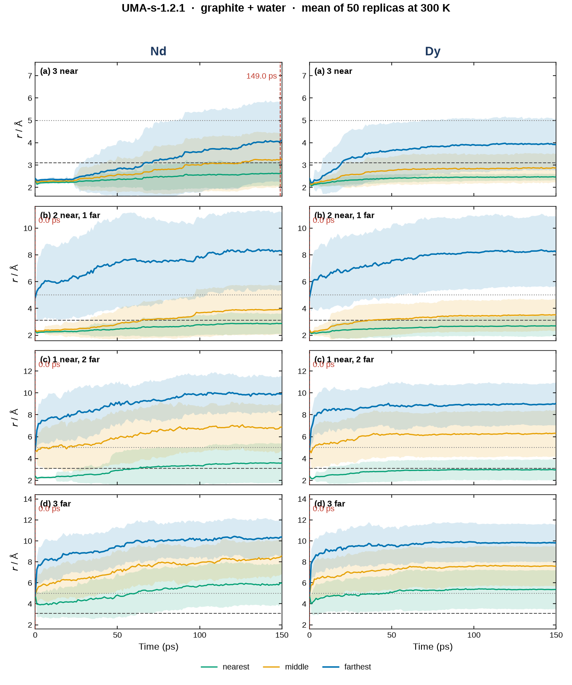
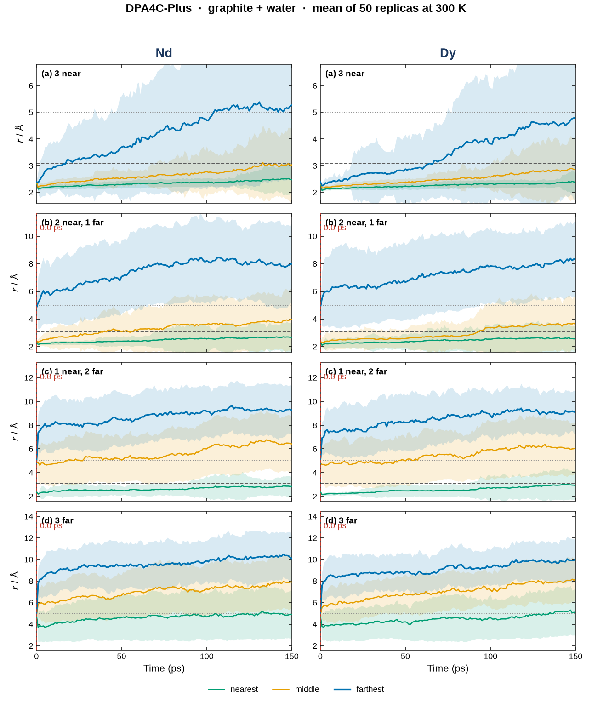
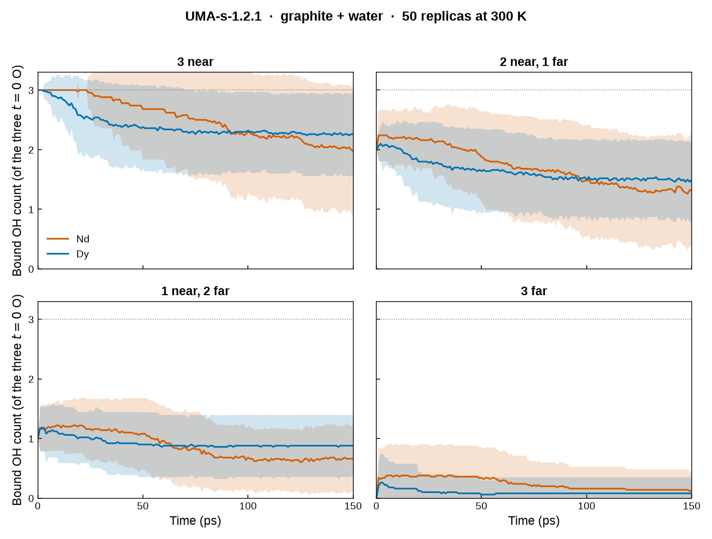
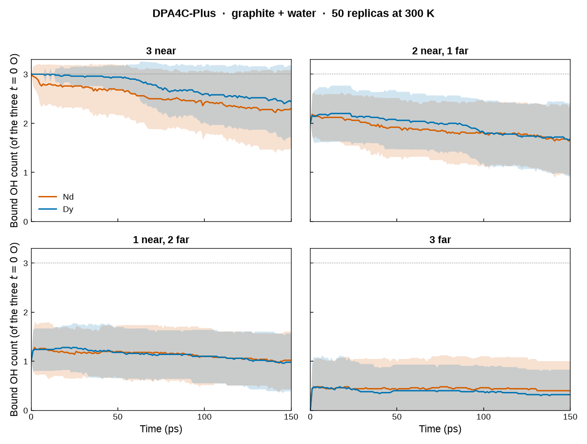
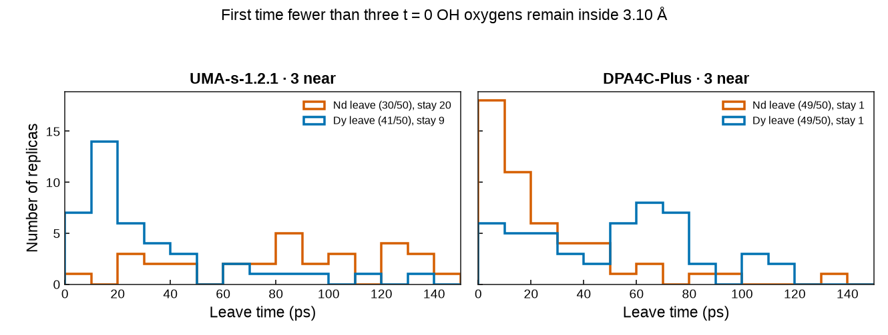

150 ps NVT · 50 replicas · UMA-s-1.2.1 and DPA4C-Plus
Dy and Nd hydroxides on graphite in water
Fixed-cell Langevin MD at 300 K for Dy and Nd on a two-layer graphite slab with water and three hydroxides. Each of the four OH starting geometries was run 50 times with UMA-s-1.2.1 (omol, turbo) and with DPA4C-Plus (nvalchemi). That is 800 trajectories of 150 ps at 1 fs/step. The 256 carbon atoms are frozen. Nd spin multiplicity is 4. Dy is 6.
The three traces in the analysis are the three oxygens that are hydroxide at t = 0. An oxygen is bound when its metal–oxygen distance is below 3.10 Å. “Leave” is the first time fewer than three of those oxygens remain inside 3.10 Å. In the 2 near / 1 far, 1 near / 2 far, and 3 far starts, leave is immediate by construction.
Initial structure (interactive)
Representative metal: Nd (spin multiplicity 4). Two-layer graphite (256 C, frozen in the MD) plus Nd(OH)3 and water in a 19.68 × 17.04 × 22.0 Å cell. Drag to rotate, scroll to zoom. The four buttons switch the OH near/far starting geometry.
Nd C O H
Nd · 3 near · drag to rotate
Distance of the three t = 0 hydroxide oxygens
Same definition as the pure-water page. The three traces are the three oxygens that are hydroxide at 0 ps. Each frame they are reordered into nearest, middle and farthest, then averaged over the 50 replicas. Shaded bands are one standard deviation. The dashed line is 3.10 Å and the dotted line is 5 Å. The red mark is the first time the replica-averaged bound count of those three oxygens drops to two or fewer. Left column, Nd. Right column, Dy. Rows are the four OH starting geometries.


Bound count of the three t = 0 hydroxides
Solid lines are the mean over 50 replicas. Shaded bands are one standard deviation. Blue is Dy. Orange is Nd. Rows are the four starting OH geometries.


Leave times for the 3-near start
Only the 3-near geometry begins with all three hydroxides inside 3.10 Å. Under UMA, Dy leaves earlier than Nd (41/50 leave, mean 31.2 ps for Dy; 30/50 leave, mean 83.0 ps for Nd). Under DPA the order flips: Nd leaves earlier (mean 24.3 ps) than Dy (mean 51.2 ps).

Summary over 50 replicas
Leave count is how many of the 50 replicas lose a third bound OH oxygen within 150 ps. Mean leave is the average leave time among those that leave. Mean bound is the 0–150 ps average of the bound count of the three t = 0 OH oxygens.
| Model | Start | Metal | Leave | Stay | Mean leave / ps | Mean bound |
|---|---|---|---|---|---|---|
| UMA-s-1.2.1 | 3 near | Nd | 30/50 | 20 | 83.0 | 2.52 |
| UMA-s-1.2.1 | 3 near | Dy | 41/50 | 9 | 31.2 | 2.40 |
| UMA-s-1.2.1 | 2 near, 1 far | Nd | 50/50 | 0 | 0.0 | 1.72 |
| UMA-s-1.2.1 | 2 near, 1 far | Dy | 50/50 | 0 | 0.0 | 1.64 |
| UMA-s-1.2.1 | 1 near, 2 far | Nd | 50/50 | 0 | 0.0 | 0.87 |
| UMA-s-1.2.1 | 1 near, 2 far | Dy | 50/50 | 0 | 0.0 | 0.92 |
| UMA-s-1.2.1 | 3 far | Nd | 50/50 | 0 | 0.0 | 0.25 |
| UMA-s-1.2.1 | 3 far | Dy | 50/50 | 0 | 0.0 | 0.09 |
| DPA4C-Plus | 3 near | Nd | 49/50 | 1 | 24.3 | 2.54 |
| DPA4C-Plus | 3 near | Dy | 49/50 | 1 | 51.2 | 2.75 |
| DPA4C-Plus | 2 near, 1 far | Nd | 50/50 | 0 | 0.0 | 1.88 |
| DPA4C-Plus | 2 near, 1 far | Dy | 50/50 | 0 | 0.0 | 1.96 |
| DPA4C-Plus | 1 near, 2 far | Nd | 50/50 | 0 | 0.0 | 1.13 |
| DPA4C-Plus | 1 near, 2 far | Dy | 50/50 | 0 | 0.0 | 1.14 |
| DPA4C-Plus | 3 far | Nd | 50/50 | 0 | 0.0 | 0.44 |
| DPA4C-Plus | 3 far | Dy | 50/50 | 0 | 0.0 | 0.38 |
Simulation
- Cell 19.68 × 17.043 × 22.0 Å, 3D periodic. Composition: graphite (256 C) + Ln3+ + 3 OH− + water, charge 0.
- UMA-s-1.2.1 from
uma-s-1p2p1.pt, fairchem turbo, task omol, TF32. Spin rewritten every force call. - DPA4C-Plus from
frozen.pt2, nvalchemi neighbor list,charge_spin = [0, multiplicity]. - NVT Langevin, 1 fs, 150 ps, friction 1 ps−1, fixed cell, carbon fixed. Frames every 0.1 ps.
- Slurm jobs 58925634 (UMA, 25 nodes, 10 h 31 min) and 58925636 (DPA, 10 nodes, 6 h 58 min).